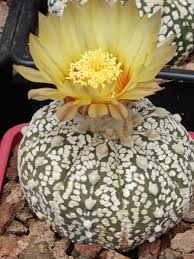
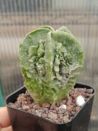
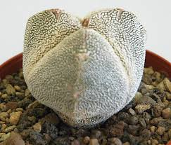
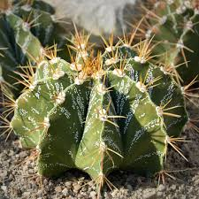

Astrophytum Asterias Oibo

Hermoso cactus de la especie Asterias, tamaño pequeño.
Precio: $12,000 CLP
Astrophytum Asterias Super Kabuto

Cactus Asterias con patrones únicos, tamaño mediano.
Precio: $15,000 CLP
Astrophytum Asterias Nudum
Cactus Asterias de alta rareza, excelente para colecciones.
Precio: $18,000 CLP
Astrophytum Asterias Oibo V2
Astrophytum Asterias con múltiples areolas, muy apreciado.
Precio: $20,000 CLP
Astrophytum Asterias Purple
Cactus de la especie Asterias, de tamaño grande y bien desarrollado.
Precio: $22,000 CLP
Astrophytum Asterias Kabuto
Astrophytum Asterias en maceta decorativa, ideal para interiores.
Precio: $25,000 CLP
Astrophytum Myriostigma Myriostigma
Cactus Myriostigma con patrones estrellados, tamaño pequeño.
Precio: $14,000 CLP
Astrophytum Myriostigma Myriostigma V2
Astrophytum Myriostigma de tamaño mediano con formas geométricas.
Precio: $16,000 CLP
Astrophytum Myriostigma Cuadricostatum
Astrophytum Myriostigma de alta calidad, colección avanzada.
Precio: $19,000 CLP
Astrophytum Myriostigma Fukuryu

Cactus Myriostigma de gran tamaño y crecimiento saludable.
Precio: $21,000 CLP
Astrophytum Myriostigma Tricostatum

Cactus Myriostigma con floración única, ejemplar raro.
Precio: $23,000 CLP
Astrophytum Myrio. Ornatum

Astrophytum Ornatum con líneas blancas, cactus de gran tamaño.
Precio: $26,000 CLP